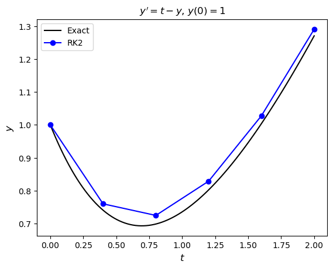
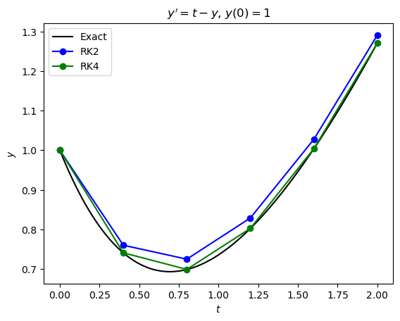
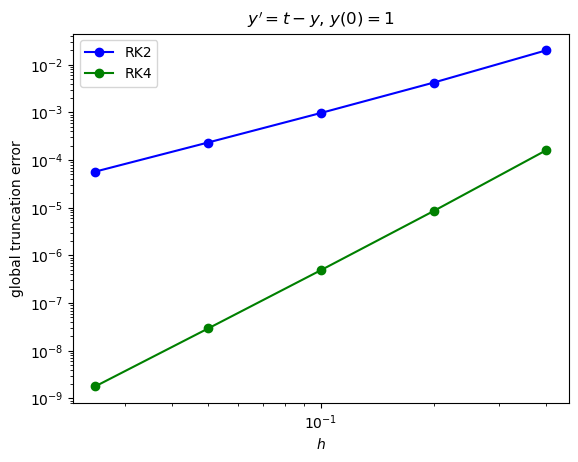
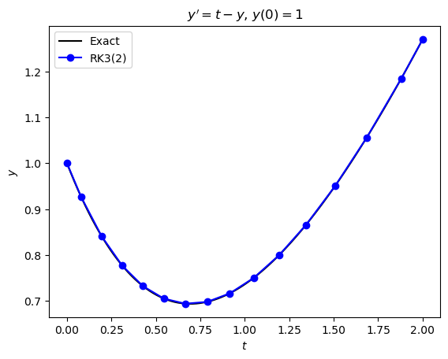

2.8. Explicit Runge-Kutta Methods Exercises#
Exercise 2.1
Write the following Runge-Kutta method in a Butcher tableau.
Solution
Exercise 2.2
Write out the equations for the following Runge-Kutta method.
Solution
Exercise 2.3
Derive an explicit second-order Runge-Kutta method where \(b_1 =\frac{1}{3}\). Express your solution as Butcher tableau.
Solution
Exercise 2.4
Determine the order, elementary weight and density of this rooted tree.
{kind=link}
Solution
Exercise 2.5
Derive the order conditions for a third-order explicit Runge-Kutta method.
Solution
Exercise 2.6
Derive an explicit fourth-order Runge-Kutta method where \(c_2 = \frac{1}{3}\), \(c_3 = \frac{1}{2}\) and \(c_4 = 1\). Express your method as a Butcher tableau.
Solution
Exercise 2.7
Using pen and paper and working to 4 decimal places, apply your Runge-Kutta method derived in Exercise 2.3 to solve the following initial value problem using a step length of \(h=0.4\)
Solution
The Runge-Kutta method derived in Exercise 2.3 is
Here \(t_0 = 0\), \(y_0 = 1\) and \(f(t, y) = t - y\) so
Exercise 2.8
Write a Python or MATLAB program that computes the solution to the IVP from Exercise 2.7 using the second-order ERK method derived in Exercise 2.3. The exact solution to this IVP is \(y = t + 2e^{-t} - 1\), produce a plot of the numerical solution and the exact solution on the same set of axes.
Solution

import numpy as np
import matplotlib.pyplot as plt
# Define RK2 method function
def rk2(f, tspan, y0, h):
# Determine the number of ODEs in the system
N = len(y0)
# Calculate the number of steps required
nsteps = int((tspan[1] - tspan[0]) / h)
# Define solution arrays and assign initial values
t = np.zeros(nsteps + 1)
y = np.zeros((nsteps + 1, N))
t[0] = tspan[0]
y[0,:] = y0
# Loop through the stages
for n in range(nsteps):
# Compute the stage values
k1 = f(t[n], y[n,:])
k2 = f(t[n] + 0.75 * h, y[n,:] + 0.75 * h * k1)
# Compute the solution for the next step
y[n+1,:] = y[n,:] + h / 3 * (k1 + 2 * k2)
t[n+1] = t[n] + h
return t, y
# Define ODE function
def f(t, y):
return t - y
# Define exact solution
def exact(t):
return t + 2 * np.exp(-t) - 1
# Define IVP parameters
tspan = [0, 2] # boundaries of the t domain
y0 = [1] # initial values
h = 0.4 # step length
# Solve the IVP using the Euler method
t, y = rk2(f, tspan, y0, h)
# Calculate exact solution
t_exact = np.linspace(tspan[0], tspan[1], 100)
y_exact = exact(t_exact)
# Plot solution
fig, ax = plt.subplots()
plt.plot(t_exact, y_exact, "k", label="Exact")
plt.plot(t, y[:,0], "b-o", label="RK2")
plt.xlabel("$t$")
plt.ylabel("$y$")
plt.title("$y' = t - y$, $y(0) = 1$")
plt.legend()
plt.show()
% Define RK2 method function
function [t, y] = rk2(f, tspan, y0, h)
% Determine the number of ODEs in the system
N = length(y0);
% Compute the number of steps required
nsteps = floor((tspan(2) - tspan(1)) / h);
% Define solution arrays and assign initial values
t = zeros(nsteps + 1, 1);
y = zeros(nsteps + 1, N);
t(1) = tspan(1);
y(1,:) = y0;
% Loop through the steps
for n = 1 : length(t) - 1
% Compute the stage values
k1 = f(t(n), y(n,:))';
k2 = f(t(n) + 0.75 * h, y(n,:) + 0.75 * h * k1)';
% Compute the solution for the next step
y(n+1,:) = y(n,:) + h/3 * (k1 + 2 * k2);
t(n+1) = t(n) + h;
end
end
% Define ODE function and exact solution
f = @(t, y) t - y;
exact = @(t) t + 2 * exp(-t) - 1;
% Define IVP parameters
tspan = [0, 2]; % boundaries of the t domain
y0 = 1; % initial value of the solution
h = 0.4; % step length
% Solve IVP
[t, y] = rk2(f, tspan, y0, h);
% Compute exact solution
t_exact = linspace(tspan(1), tspan(2), 100);
y_exact = exact(t_exact);
% Plot solution
plot(t_exact, y_exact, 'k', LineWidth=2)
hold on
plot(t, y, 'b-o', MarkerFaceColor='b', LineWidth=2)
hold off
xlabel("$t$", Interpreter="latex")
ylabel("$y$", Interpreter="latex")
legend(["Exact", "RK2"], Location="northwest")
axis padded
Exercise 2.9
Write a Python or MATLAB program which uses the fourth-order method derived in Exercise 2.6, to solve the IVP from Exercise 2.7. Produce a plot that compares the second and fourth-order numerical solutions to the exact solution.
Solution

# Define fourth-order Runge-Kutta method function
def rk4(f, tspan, y0, h):
# Determine the number of ODEs in the system
N = len(y0)
# Calculate the number of steps required
nsteps = int((tspan[1] - tspan[0]) / h)
# Define solution arrays and assign initial values
t = np.zeros(nsteps + 1)
y = np.zeros((nsteps + 1, N))
t[0] = tspan[0]
y[0,:] = y0
# Loop through the stages
for n in range(nsteps):
# Compute the stage values
k1 = f(t[n], y[n,:])
k2 = f(t[n] + 1/3 * h, y[n,:] + 1/3 * h * k1)
k3 = f(t[n] + 1/2 * h, y[n,:] + h * (1/8 * k1 + 3/8 * k2))
k4 = f(t[n] + h, y[n,:] + h * (1/2 * k1 - 3/2 * k2 + 2 * k3))
# Compute the solution for the next step
y[n+1,:] = y[n,:] + h / 6 * (k1 + 4 * k3 + k4)
t[n+1] = t[n] + h
return t, y
# Define ODE function
def f(t, y):
return t - y
# Define exact solution
def exact(t):
return t + 2 * np.exp(-t) - 1
# Solve the IVP
t, y_rk2 = rk2(f, tspan, y0, h)
t, y_rk4 = rk4(f, tspan, y0, h)
# Calculate exact solution
t_exact = np.linspace(tspan[0], tspan[1], 100)
y_exact = exact(t_exact)
# Plot solution
fig, ax = plt.subplots()
plt.plot(t_exact, y_exact, "k", label="Exact")
plt.plot(t, y_rk2[:,0], "b-o", label="RK2")
plt.plot(t, y_rk4[:,0], "g-o", label="RK4")
plt.xlabel("$t$")
plt.ylabel("$y$")
plt.title("$y' = t - y$, $y(0) = 1$")
plt.legend()
plt.show()
% Define fourth-order Runge-Kutta method function
function [t, y] = rk4(f, tspan, y0, h)
% Determine the number of ODEs in the system
N = length(y0);
% Compute the number of steps required
nsteps = floor((tspan(2) - tspan(1)) / h);
% Define solution arrays and assign initial values
t = zeros(nsteps + 1, 1);
y = zeros(nsteps + 1, N);
t(1) = tspan(1);
y(1,:) = y0;
% Loop through the steps
for n = 1 : length(t) - 1
% Compute the stage values
k1 = f(t(n), y(n,:))';
k2 = f(t(n) + 1/3 * h, y(n,:) + 1/3 * h * k1)';
k3 = f(t(n) + 1/2 * h, y(n,:) + h * (1/8 * k1 + 3/8 * k2))';
k4 = f(t(n) + h, y(n,:) + h * (1/2 * k1 - 3/2 * k2 + 2 * k3))';
% Compute the solution for the next step
y(n+1,:) = y(n,:) + h/6 * (k1 + 4 * k3 + k4);
t(n+1) = t(n) + h;
end
end
% Define ODE function and exact solution
f = @(t, y) t - y;
exact = @(t) t + 2 * exp(-t) - 1;
% Define IVP parameters
tspan = [0, 2]; % boundaries of the t domain
y0 = 1; % initial value of the solution
h = 0.4; % step length
% Solve IVP
[t, y_rk2] = rk2(f, tspan, y0, h);
[t, y_rk4] = rk4(f, tspan, y0, h);
% Compute exact solution
t_exact = linspace(tspan(1), tspan(2), 100);
y_exact = exact(t_exact);
% Plot solution
plot(t_exact, y_exact, 'k', LineWidth=2)
hold on
plot(t, y_rk2, 'b-o', MarkerFaceColor='b', LineWidth=2)
plot(t, y_rk4, 'g-o', MarkerFaceColor='g', LineWidth=2)
hold off
xlabel("$t$", Interpreter="latex")
ylabel("$y$", Interpreter="latex")
legend(["Exact", "RK2", "RK4"], Location="northwest")
axis padded
Exercise 2.10
Repeat the calculations from Exercise 2.9 using a range of values of the step length starting at \(h=0.4\) and halving each time until \(h = 0.025\).
(a) Calculate the global truncation error for \(y(2)\) for the two methods and present this information in a table.
Hint: you can use the NumPy command idx = np.argmin(abs(t - 2)) or the MATLAB command [~,idx] = min(abs(t - 2)) to determine the index of the value in the array t which is closest to 2.
Solution
\(h\) |
RK2 |
RK4 |
|---|---|---|
0.400 |
2.01e-02 |
1.61e-04 |
0.200 |
4.23e-03 |
8.53e-06 |
0.100 |
9.74e-04 |
4.90e-07 |
0.050 |
2.34e-04 |
2.94e-08 |
0.025 |
5.75e-05 |
1.80e-09 |
# Define values for t and h
hvals = [0.4, 0.2, 0.1, 0.05, 0.025]
tval = 2
# Initialise error lists
E_rk2, E_rk4 = [], []
# Loop through h values
for h in hvals:
# Solve IVP using the RK2 and RK4 methods
t, y_rk2 = rk2(f, tspan, y0, h)
t, y_rk4 = rk4(f, tspan, y0, h)
# Determine index of closest element to tval
idx = np.argmin(abs(t - tval))
# Compute errors and append to error lists
E_rk2.append(abs(exact(tval) - y_rk2[idx,0]))
E_rk4.append(abs(exact(tval) - y_rk4[idx,0]))
# Print table of solution values
print("| h | RK2 | RK4 |")
print("|:-----:|:--------:|:-------:|")
for i in range(len(hvals)):
print(f"| {hvals[i]:0.3f} | {E_rk2[i]:0.2e} | {E_rk4[i]:0.2e} |")
% Define values for t and h
hvals = [0.4, 0.2, 0.1, 0.05, 0.025];
tval = 2;
% Initialise error lists
E_rk2 = [];
E_rk4 = [];
% Loop through h values
for h = hvals
% Solve IVP using the RK2 and RK4 methods
[t, y_rk2] = rk2(f, tspan, y0, h);
[t, y_rk4] = rk4(f, tspan, y0, h);
% Determine index of closest element to tval
[~, idx] = min(abs(t - tval));
% Compute errors and append to error lists
E_rk2 = [E_rk2, abs(exact(tval) - y_rk2(idx,1))];
E_rk4 = [E_rk4, abs(exact(tval) - y_rk4(idx,1))];
end
% Output table of errors
if true
fprintf('| h | RK2 | RK4 |')
fprintf('|:-----:|:--------:|:--------:|');
for n = 1 : length(hvals)
fprintf('| %1.3f | %1.2e | %1.2e |\n', hvals(n), E_rk2(n), E_rk4(n))
end
end
(b) Produce a plot of the global truncation errors against \(h\) for each of the ERK methods using logarithmic scales for the horizontal and vertical axes.
Solution

# Plot errors
fig, ax = plt.subplots()
plt.loglog(hvals, E_rk2, "b-o", label="RK2")
plt.loglog(hvals, E_rk4, "g-o", label="RK4")
plt.xlabel("$h$")
plt.ylabel("global truncation error")
plt.title("$y' = t - y$, $y(0) = 1$")
plt.legend()
plt.show()
% Plot errors
loglog(hvals, E_rk2, 'b-o', MarkerFaceColor='b', LineWidth=2)
hold on
loglog(hvals, E_rk4, 'g-o', MarkerFaceColor='g', LineWidth=2)
hold off
xlabel("$h$", Interpreter="latex")
ylabel("global truncation error")
title("$y' = t - y$, $y(0) = 1$", Interpreter="latex")
legend(["RK2", "RK4"], Location="northwest")
axis padded
(c) Use the global truncation errors to estimate the order of the ERK methods.
Solution
The order of a numerical method can be estimated using
where \(h_1 > h_2\) are step lengths and \(E(h)\) is the global truncation error using step length \(h\).
Using the errors computed earlier
Exercise 2.11
Combining Heun’s method and Kutta’s third-order method gives the following Butcher tableau for an embedded Runge-Kutta method
where the first row of the \(b\) coefficients gives the third-order accurate solution and the second row gives the second-order accurate solution.
Write a Python or MATLAB program that solves the initial value problem from Exercise 2.7 using an absolute tolerance of \(10^{-6}\) and a relative tolerance of \(10^{-3}\). Produce a plot that compares the numerical solution with the exact solution.
Solution

def rk23(f, tspan, y0, atol=1e-6, rtol=1e-3):
# Determine the number of ODEs in the system
N = len(y0)
# Define solution arrays and assign initial values
max_steps = 100000
t = np.zeros(max_steps + 1)
y = np.zeros((max_steps + 1, N))
t[0] = tspan[0]
y[0,:] = y0
# Compute initial step length
h = 0.8 * rtol**(1 / 3)
# Loop through steps
n = 0
while t[n] < tspan[-1]:
# Compute the stage values
k1 = f(t[n], y[n,:])
k2 = f(t[n] + 0.5 * h, y[n,:] + 0.5 * h * k1)
k3 = f(t[n] + h, y[n,:] + h * (-k1 + 2 * k2))
# Compute the 2nd and 3rd order solutions for the next step
y3 = y[n,:] + h/6 * (k1 + 4 * k2 + k3)
y2 = y[n,:] + h * k2
# Compute truncation error estimate
e = np.abs(y3 - y2)
s = atol + rtol * np.maximum(np.abs(y[n,:]), np.abs(y3))
Delta = np.sqrt(np.mean((e / s)**2))
# Check if current step was successful
if Delta <= 1:
y[n+1,:] = y3
t[n+1] = t[n] + h
n += 1
# Compute ratio of new step to old
r = min(5, max(0.1, 0.8 * Delta**(-1/3)))
# Update h
h = min(r * h, tspan[-1] - t[n])
return t[:n+1], y[:n+1,:]
# Solve IVP
atol, rtol = 1e-6, 1e-3
t, y = rk23(f, tspan, y0, atol, rtol)
# Plot solution
fig, ax = plt.subplots()
plt.plot(t_exact, y_exact, "k", label="Exact")
plt.plot(t, y[:,0], "b-o", label="RK3(2)")
plt.xlabel("$t$")
plt.ylabel("$y$")
plt.title("$y' = t - y$, $y(0) = 1$")
plt.legend()
plt.show()
function [t, y] = rk23(f, tspan, y0, atol, rtol)
% Determine the number of ODEs in the system
N = length(y0);
% Define solution arrays and assign initial values
max_steps = 100000;
t = zeros(max_steps, 1);
y = zeros(max_steps, N);
t(1) = tspan(1);
y(1,:) = y0;
% Compute initial step length
h = 0.8 * rtol ^ (1/3);
% Loop through steps
n = 1;
while t(n) < tspan(2)
% Compute stage values
k1 = f(t(n), y(n,:))';
k2 = f(t(n) + 0.5 * h, y(n,:) + 0.5 * h * k1)';
k3 = f(t(n) + h, y(n,:) + h * (-k1 + 2 * k2))';
% Compute 2nd and 3rd order solution
y3 = y(n,:) + h/6 * (k1 + 4 * k2 + k3);
y2 = y(n,:) + h * k2;
% Compute Delta
e = abs(y3 - y2);
s = atol + rtol * max(abs(y(n,:)), abs(y3));
Delta = sqrt(mean((e ./ s).^2));
% Check if current step was successful
if Delta <= 1
y(n+1,:) = y3;
t(n+1) = t(n) + h;
n = n + 1;
end
% Update h
r = min(5, max(0.1, 0.8 * Delta^(-1/3)));
h = min(r * h, tspan(2) - t(n));
end
t(n+1:end) = [];
y(n+1:end,:) = [];
end
% Solve the IVP
atol = 1e-6;
rtol = 1e-3;
[t, y] = rk23(f, tspan, y0, atol, rtol);
% Plot solution
plot(t_exact, y_exact, 'k-', LineWidth=2)
hold on
plot(t, y, 'b-o', LineWidth=2, MarkerFaceColor='b')
hold off
xlabel("$t$", Interpreter="latex")
ylabel("$y$", Interpreter="latex")
title("$y' - t - y$, $y(0) = 1$", Interpreter="latex")
legend(["Exact", "RK3(2)"], Location="northwest")
axis padded